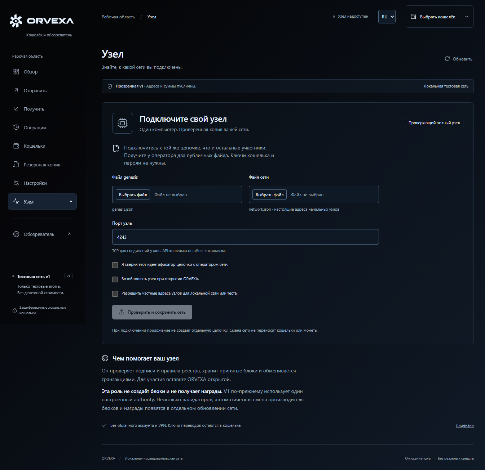

Ключи остаются у вас.
Создайте зашифрованный кошелёк, получите адрес и QR-код, подписывайте переводы локально и сохраняйте резервную копию. В v1 восстановление использует файл и пароль; seed-фразы появятся позже.
Кошелёк, обозреватель блоков и проверяющий узел в одном приложении ORVEXA. Ключи остаются у вас. Узел помогает хранить и проверять цепочку.
Скачать для macOS 14+ (Apple Silicon и Intel) ↓ · Без нотаризации — как открыть ↗
В v1 адреса и суммы публичны. Только тестовые атомы. Приватные переводы, консенсус валидаторов и награды ещё не включены.

Создайте зашифрованный кошелёк, получите адрес и QR-код, подписывайте переводы локально и сохраняйте резервную копию. В v1 восстановление использует файл и пароль; seed-фразы появятся позже.
Запустите настоящий полный узел Rust из приложения. Обменивайтесь подписанными транзакциями и блоками по TCP / Noise. Останавливайте и возобновляйте работу с той же цепочкой.
Просматривайте настоящие блоки, ищите транзакцию по хешу и проверяйте включение в цепочку. Обозреватель показывает публичную информацию текущего протокола.
Без облачного аккаунта, подписки и VPN. Участники предоставляют компьютеры и подключение к интернету.
Скачайте Windows-приложение или ZIP. Узел и интерфейс уже внутри; Rust и Node.js для запуска не нужны. Создайте локальный кошелёк и сохраните зашифрованную копию.
Импортируйте публичные genesis.json и network.json от оператора. Независимо сверьте идентификатор цепочки. Присоединение не создаёт отдельную сеть незаметно.
Нажмите «Запустить узел». Он работает в фоне приложения, пока вы пользуетесь кошельком и обозревателем. Оставьте ORVEXA открытой: закрытие этой версии останавливает узел.
Это цель следующего реестра, а не свойство текущей версии. Суммы и балансы должны оставаться скрытыми, с добровольным раскрытием по решению владельца.
Уже опубликованные данные нельзя сделать секретными задним числом. Переданные сведения просмотра нельзя удалить из чужой копии.
Поэтапный план разработкиВ Windows узел запускается из приложения. Для macOS 14+ есть универсальное приложение (Apple Silicon и Intel), собранное и проверенное на Mac; оно не нотаризовано. В Linux можно собрать консольный узел. Доступные извне участники помогают подключаться остальным; обычные узлы могут устанавливать исходящие соединения за NAT.
Сборка и проверка на Macgit clone https://github.com/waxiechc/orvexa.git
cd orvexa
cargo build --release --locked \
-p orvexa-node -p orvexa-cliИспользуйте общую genesis и настоящий адрес начального узла от оператора. Команда собирает программу, а не создаёт работающую публичную сеть.
Нативные приложения Windows и macOS. Настоящий локальный узел. Открытый исходный код.